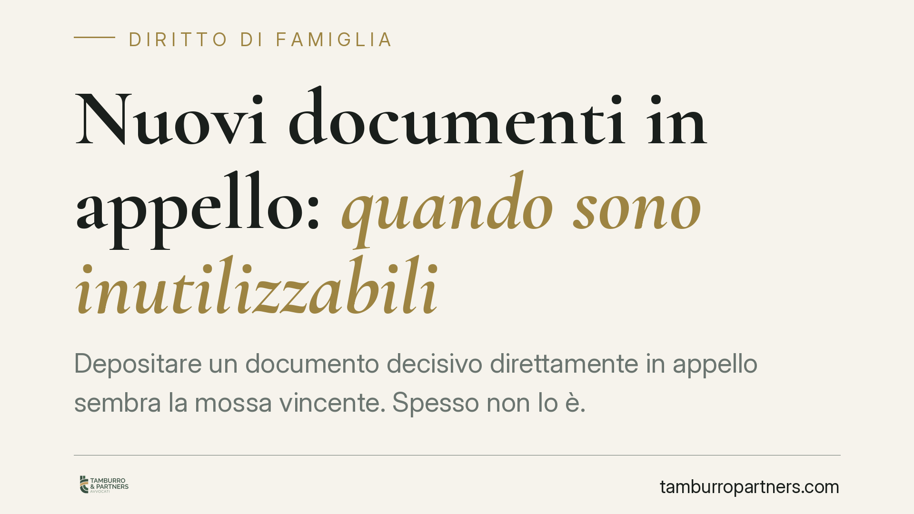

Nuovi documenti in appello: quando sono inutilizzabili
Depositare un documento decisivo direttamente in appello sembra la mossa vincente. Spesso non lo è. Il codice di procedura civile pone limiti stringenti all'ingresso di nuove prove nel secondo grado, con conseguenze dirette nelle cause di famiglia, dove la prova reddituale incide sul calcolo del mantenimento dei figli. Vediamo cosa dice la norma e come muoversi.

Il caso e la norma di riferimento
Un'ordinanza della Corte di Cassazione del 2025 (di cui restano da verificare gli estremi esatti — numero, sezione e data di deposito — prima di ogni riferimento puntuale) è tornata sul tema dei documenti prodotti per la prima volta in appello. Il principio applicato, in linea con l'orientamento consolidato, è che i nuovi documenti depositati insieme alle note conclusive, senza una specifica e tempestiva istanza, sono inammissibili.
La norma cardine è l'art. 345 del codice di procedura civile, che disciplina il divieto di *nova* in appello, cioè il divieto di introdurre nuove domande, eccezioni e mezzi di prova nel secondo grado di giudizio. A questo si affianca il principio del giusto processo e del contraddittorio sancito dall'art. 111 della Costituzione.
È importante distinguere i due piani: l'art. 111 Cost. è la cornice di garanzia; l'art. 345 c.p.c. è la regola operativa che stabilisce se e quando un documento può entrare in causa.
Cosa è cambiato con la riforma Cartabia
Con il D.Lgs. 149/2022 (riforma Cartabia) il regime dei nuovi documenti in appello è stato reso più rigoroso. Il criterio della "indispensabilità" della prova — che in passato aveva aperto qualche spiraglio — non è più il parametro decisivo.
Oggi l'art. 345 c.p.c. ammette nuovi documenti e nuove prove solo se la parte dimostra di non aver potuto proporli nel giudizio di primo grado per una causa a essa non imputabile. In pratica non basta che il documento sia utile o rilevante: occorre spiegare *perché* non è stato depositato prima e provare che l'omissione non dipende da negligenza della parte.
È un requisito stringente. Chi arriva in appello con carte nuove deve giustificarle, non limitarsi a produrle.
Il contraddittorio: perché il divieto ha senso
La ragione del limite è semplice. Il processo è costruito per fasi: ciascuna parte deve poter conoscere, esaminare e contestare i documenti dell'altra entro tempi definiti.
Se una parte deposita un documento a giudizio ormai chiuso — ad esempio con le note conclusive — l'altra non ha modo di replicare in modo effettivo. Si romperebbe l'equilibrio del confronto. È questa la sostanza del contraddittorio: nessuno può essere sorpreso da una prova su cui non ha potuto dire la sua.
Il divieto di *nova*, quindi, non è un formalismo. Protegge la parità tra le parti e la genuinità della decisione.
Perché conta nel diritto di famiglia
Nelle cause di mantenimento dei figli il tema è concreto e frequente. Il giudice determina l'importo secondo il principio di proporzionalità: pesa i redditi e le capacità economiche di entrambi i genitori.
La prova reddituale — buste paga, dichiarazioni dei redditi, estratti conto, documenti su spese e patrimonio — è il cuore della decisione. Se una parte tenta di far valere in appello documenti reddituali nuovi, prodotti in ritardo, rischia di vederseli dichiarare inammissibili. Il risultato può essere una determinazione del mantenimento fondata sul quadro probatorio del primo grado, anche se incompleto.
Il profilo è doppio.
Chi produce tardi rischia di perdere l'occasione di far valere elementi favorevoli. Chi subisce la produzione tardiva ha invece uno strumento difensivo: può eccepire l'inammissibilità e chiedere che quei documenti non siano considerati.
In entrambi i casi, l'esito della causa può cambiare in modo sensibile.
Cosa fare in concreto
- Deposita in primo grado tutta la documentazione reddituale e patrimoniale disponibile, senza rinviare a un eventuale appello ciò che puoi produrre subito.
- Se emerge un documento nuovo in appello, formula un'istanza specifica e tempestiva, spiegando perché non era producibile prima e dimostrando la non imputabilità del ritardo.
- Non affidare il deposito di documenti alle note conclusive: è la modalità più esposta al rischio di inammissibilità.
- Se la controparte produce documenti tardivi, valuta subito l'eccezione di inammissibilità ex art. 345 c.p.c., verificando il rispetto del contraddittorio.
- Controlla la coerenza tra i documenti depositati e il quadro reddituale su cui si fonda la richiesta di mantenimento, così da individuare per tempo eventuali lacune probatorie.
Il messaggio operativo è chiaro: in materia di famiglia la partita probatoria si gioca soprattutto nel primo grado. L'appello non è la sede per rimediare a omissioni evitabili.
---
*Contributo informativo a cura di Tamburro & Partners Avvocati - Avv. Giuseppe Tamburro. Non costituisce parere legale.*
Ogni famiglia ha il suo equilibrio.
Separazione, divorzio, affidamento, assegno: se vuoi un confronto riservato su una specifica situazione, scrivi allo studio. Ti rispondiamo entro un giorno lavorativo.